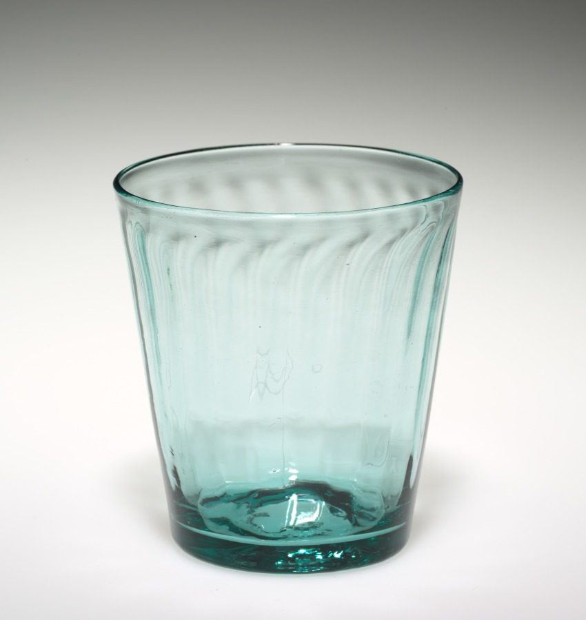
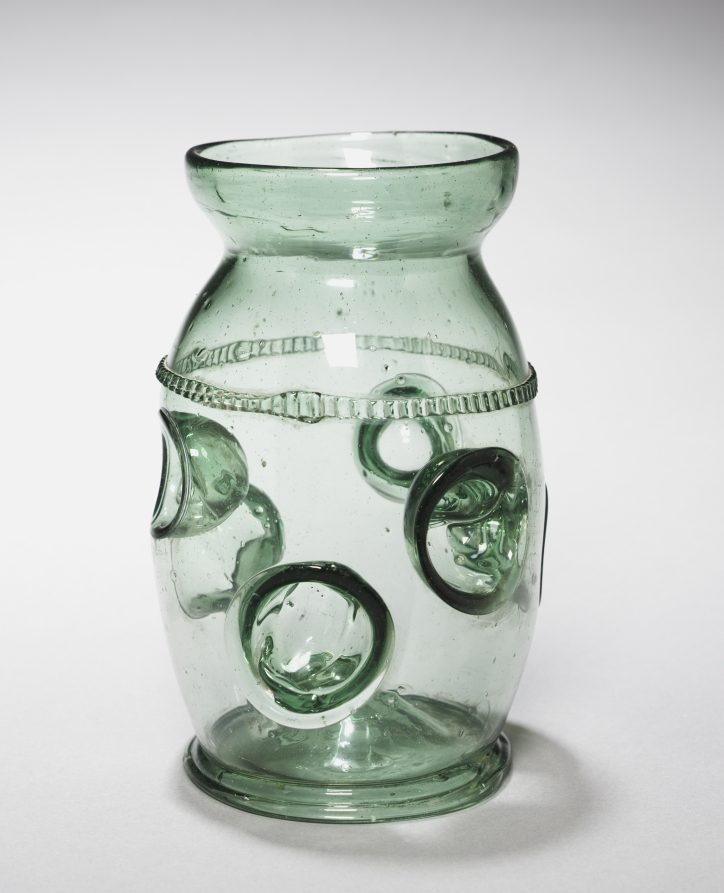
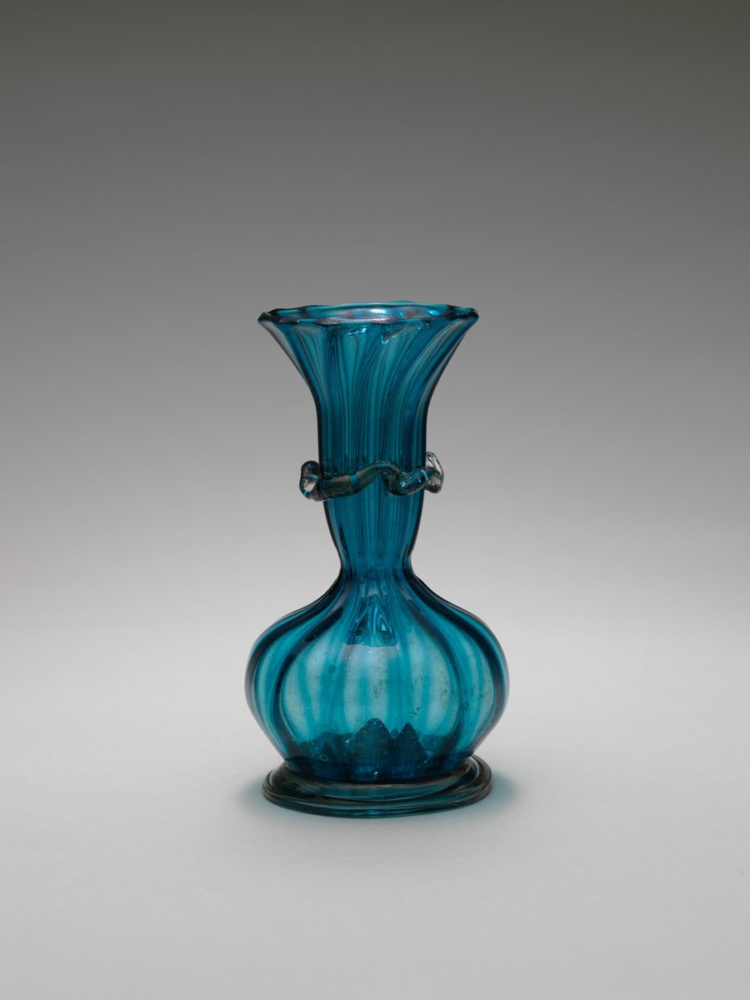
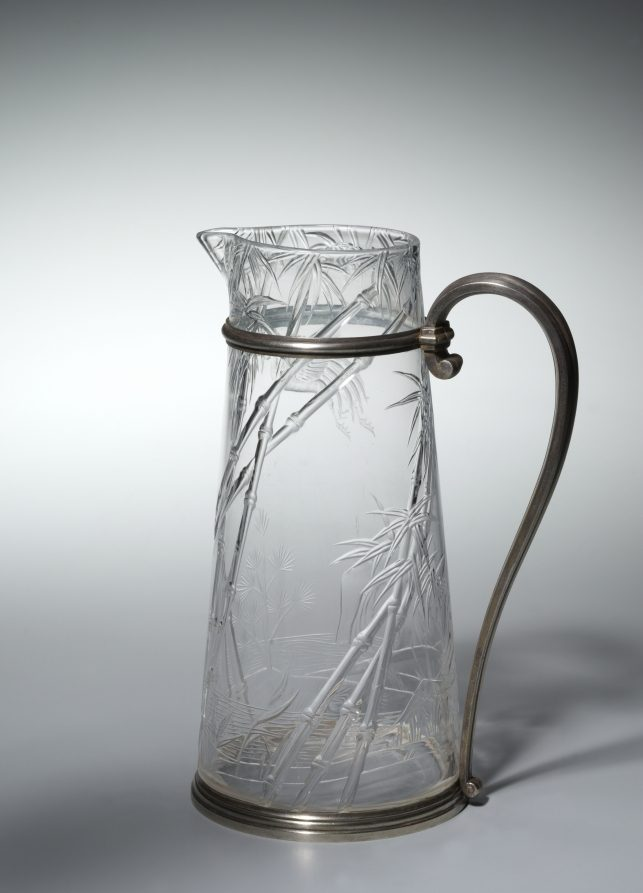
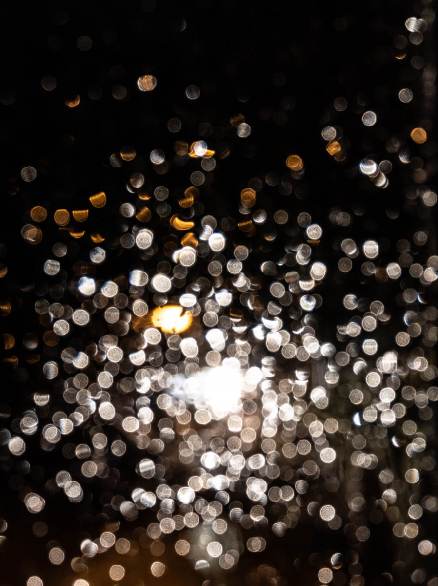

2mm / カフェ / 兵庫県加西市
びーどろはうす
兵庫県加西市のカフェ「びーどろはうす」のご案内ページです。営業時間やメニューなど、詳しいことは準備中。電話は 0790-43-1445、まずはInstagramものぞいてみてください。

制作側の連想
板ガラスの切り口は青緑
店名の由来は分かりません。制作側は「びーどろ」という響きからガラスを連想し、ガラス板を横から見ると切り口(小口)が青緑に見えることを思い出しました。そこでこのサイトは、厚みの違う五枚のガラス板(2・3・5・8・10mm)を、五つのページに見立てています。ページが進むほど板が厚くなり、青緑の縁も太くなります。お店の理念や由来とは無関係の、制作側の連想です。
ガラスの器いろいろ(イメージ)
淡い色の、透ける器。
写真は国外の博物館収蔵品などのフリー素材で、お店のものではありません。提供する器・メニューを示すものでもありません。




ご案内
お店のこと(確認できたものだけ)
| 所在地 | 〒675-2321 兵庫県加西市北条町東高室78-1 |
|---|---|
| 電話 | 0790-43-1445 |
| 営業時間 | 準備中 |
| 定休日 | 準備中 |
| ご予約 | 準備中 |
| 駐車場 | 準備中 |
| SNS | Instagram @vidorohouse |